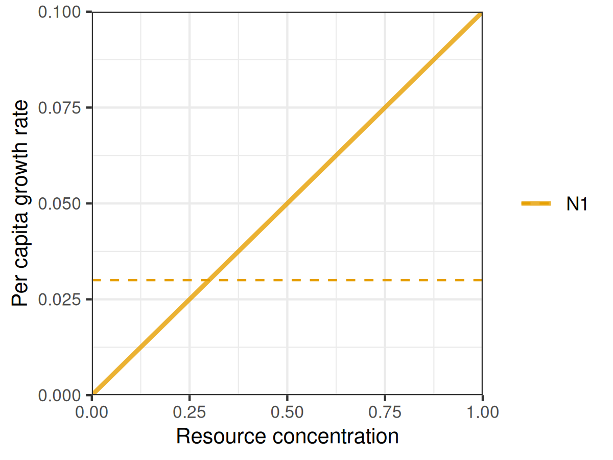
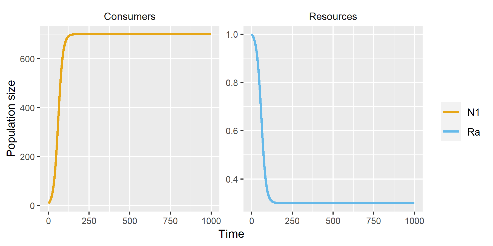
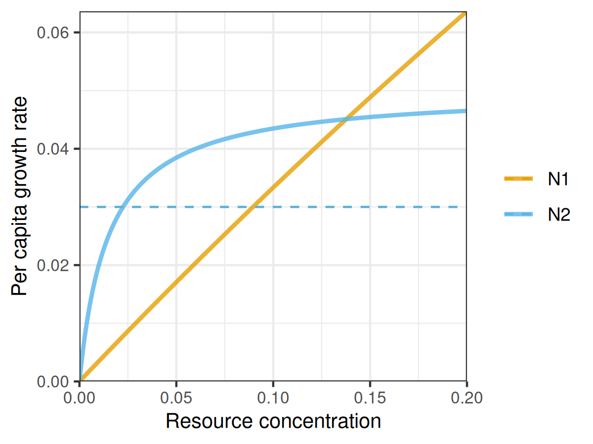
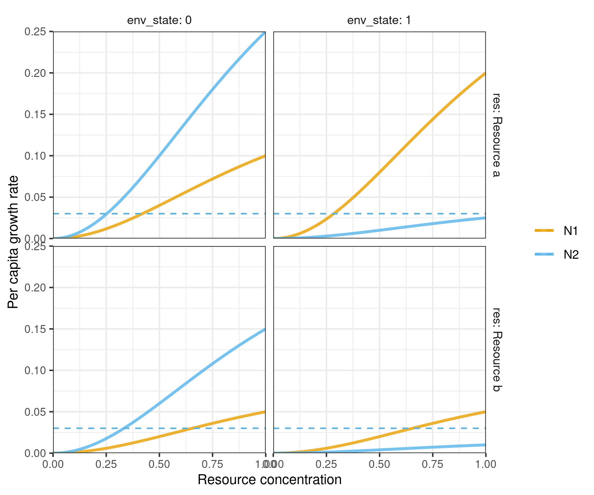
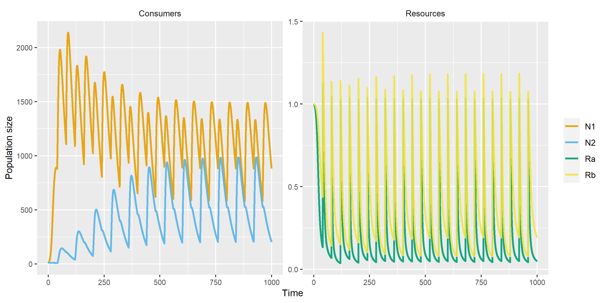

Disclaimer: rescomp is still in the very early stages of development, with functions, arguments and workflows still liable to change with high frequency. I have made the repository public in its immature state primarily for ease of sharing with friends, collaborators and students during development. Please use with caution and perform your own sanity checks! Feedback and pull requests very welcome.
The goal of the R package rescomp is to simplify the process of defining, simulating and visualizing the output of ODE models of ecological consumer-resource interactions. In essence, it is a consumer-resource modelling focused interface to the excellent deSolve package.
Installation
You can install rescomp from GitHub with:
# install.packages("devtools")
devtools::install_github("andrewletten/rescomp")Example
The primary user function in rescomp is spec_rescomp, which facilitates: i) the definition and parameterisation of a desired consumer-resource model, and ii) the specification of simulation parameters. The default output from spec_rescomp is a list defining a model for a single type I consumer (linear functional response) and a single continuously supplied resource (e.g. in a chemostat).
pars <- spec_rescomp()
#> Model properties
#> * 1 consumer(s) and 1 resource(s)
#> * Consumers have type 1 functional responses
#> * Resource supply is continuous (e.g. chemostat)
#> * Mortality is continuous
#>
#> Simulation properties
#> * Simulation time: 1000 time steps
#> * Init state: consumer(s) = [10], resource(s) = [1]rescomp::funcresp plots the functional response for easy visualistion prior to running a simulation.
plot_funcresp(pars)
The model is then simulated via rescomp::sim_rescomp (a wrapper for deSolve::ode with convenient defaults).
m1 <- sim_rescomp(pars)Output dynamics can be visualised with rescomp::plot_rescomp.
plot_rescomp(m1) 
Note, the core rescomp functions are compatible with pipes. For example spec_rescomp() |> sim_rescomp() |> plot_rescomp() will output the plot above.
The main utility of rescomp comes with specifying more elaborate models and simulation dynamics. Features/options include (but are not limited to):
- Number of consumers/resources
- Consumer functional response (type I, II or III)
- Resource dynamic (chemostat, logistic and/or pulsed)
- Resource type (substitutable or essential)
- Continuous or intermittent mortality (e.g. serial transfer)
- Time dependent growth and consumption parameters
- Delayed consumer introduction times
See ?spec_rescomp for all argument options.
The following two examples demonstrate how to build and simulate a model for: i) two consumers with type II functional responses on a single logistically growing resources; and ii) two consumers with type III functional responses with pulsed resources and time dependent growth parameters. A wide range of other examples can be found in the package vignette.
Example 1
pars <- spec_rescomp(
spnum = 2,
resnum = 1,
funcresp = "type2",
mumatrix = matrix(c(0.7,0.05),
nrow = 2,
ncol = 1,
byrow = TRUE),
kmatrix = matrix(c(2, 0.015),
nrow = 2,
ncol = 1,
byrow = TRUE),
chemo = FALSE,
resspeed = 3,
resconc = 0.2,
totaltime = 2000
)
#> Model properties
#> * 2 consumer(s) and 1 resource(s)
#> * Consumers have type 2 functional responses
#> * Resources grow logistically
#> * Mortality is continuous
#>
#> Simulation properties
#> * Simulation time: 2000 time steps
#> * Init state: consumer(s) = [10, 10], resource(s) = [0.2]
plot_funcresp(pars, maxx = 0.2)
m2 <- sim_rescomp(pars)
plot_rescomp(m2) 
Example 2
pars <- spec_rescomp(
spnum = 2,
resnum = 2,
funcresp = "type3",
timepars = TRUE,
timeparfreq = 40,
mumatrix = list(matrix(c(0.4,0.1,
0.05, 0.02),
nrow = 2,
ncol = 2,
byrow = TRUE),
matrix(c(0.2, 0.1,
0.5, 0.3),
nrow = 2,
ncol = 2,
byrow = TRUE)),
resspeed = 0,
resconc = 1,
respulse = 1,
pulsefreq = 40,
totaltime = 1000
)
#> Model properties
#> * 2 consumer(s) and 2 resource(s)
#> * Consumers have type 3 functional responses
#> * Resources are substitutable
#> * Resource supply is pulsed only
#> * Mortality is continuous
#> * Time dependent parameters with instantaneous switching every 40 timesteps
#>
#> Simulation properties
#> * Simulation time: 1000 time steps
#> * Resources pulsing every 40 timesteps
#> * Init state: consumer(s) = [10, 10], resource(s) = [1, 1]
plot_funcresp(pars, maxx = 1)
m3 <- sim_rescomp(pars)
plot_rescomp(m3) 